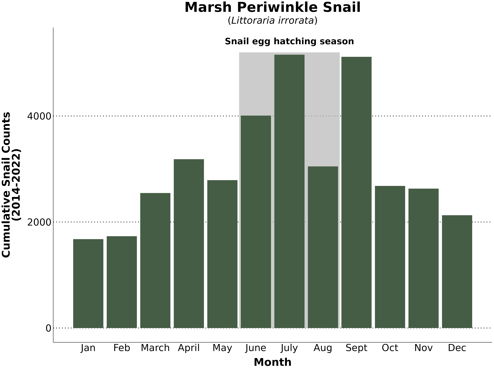
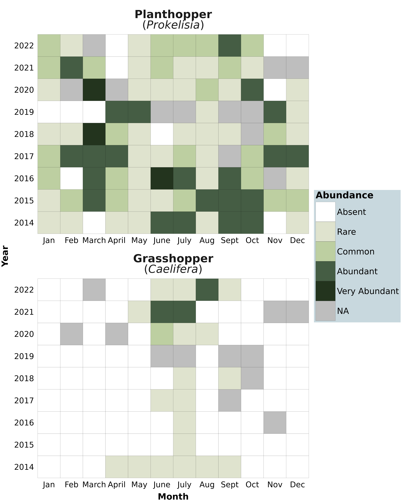
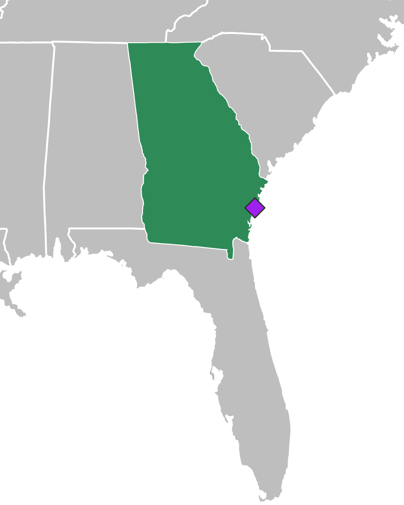

How does invertebrate animal abundance vary over time at the Georgia Coastal Ecosystem LTER Flux Tower?
For this visualization project I am interested in investigating how the abundance of three different invertebrate animals at the Georgia Coastal Ecosystem LTER Flux Tower vary over time. Marsh Periwinkle Snails (Littoraria irrorata) are commonly found in coastal marshes (Reid 1985) and I want to see which months have the highest cumulative counts 2014-2022. Planthoppers (Prokelisia sp.) and Grasshoppers (Caelifera sp.) also utilize marsh grass as habitat and a food source (Espinoza and Alvarado Bremer 2019), and I am interested in how their abundances change throughout the year and over the 2014-2022 time period.
My inspiration for this infographic is interpretive signage for nature parks/ trails. I’ve always loved looking at these signs and got very excited to make my own, but with more data focus than the average one. I wanted it to be fun but informative and for a very general audience that may be learning about salt marshes and these invertebrate animals for the first time.
Data was downloaded from DataOne using the {metajam} package. For data size and storage purposes, data was cleaned and prepared separately and here I will just be reading in the cleaned data. But, the code for the pre-processing can be seen below. This full data collection includes many different data frames such as stemheight and biomass, but here I am using only animals. The animals data frame includes the following variables:
Date: Survey date
Spartina_Zone: Spartina grass height in the survey zone
To answer my questions, I will only be using Date, Grasshopper_Abundance_Index, Prokelisia_Abundance_Index, and Littoraria_Count.
Data cleaning:
Code
# download data from DataOne ----download_d1_data_pkg("https://gmn.lternet.edu/mn/v2/packages/application%2Fbagit-097/doi%3A10.6073%2Fpasta%2F9746c71b35e9f8c544ea12c601c33949", path = here::here("data"))# read in the dataanimals <-read_csv("data/animals/PLT-GCEM-1610_Animals_9_0.CSV", skip =2)[-c(1,2),]# data cleaning ----animals_clean <- animals %>%clean_names() %>%mutate_at(c("latitude", "longitude", "littoraria_count"), as.numeric) %>%# change cols to numericmutate_at(c("grasshopper_abundance_index", "prokelisia_abundance_index", "littoraria_quadrat_area", "plot_number", "spartina_zone"), as.factor) %>%# change cols to factormutate(date = lubridate::as_date(date),year =as.factor(year(date)), # get year from the datemonth =as.factor(month(date))) # change date to a date# define shortened month namesmonth.name.short =c("Jan", "Feb", "March", "April", "May", "June", "July", "Aug", "Sept", "Oct", "Nov", "Dec")# prepare grasshopper data for heatmap ----invert_binary <- animals_clean %>%filter(year !=2013) %>%# data collection began par way through 2013mutate(month_name =as.factor(month.name.short[month]), # adding the written out month namemonth_name =factor(month_name, levels = month.name.short),grasshopper_abundance_index =as.character(grasshopper_abundance_index), # convert abundance to characterprokelisia_abundance_index =as.character(prokelisia_abundance_index), # convert abundance to numericgrasshopper_abundance_index =as.numeric(grasshopper_abundance_index), # convert abundance to characterprokelisia_abundance_index =as.numeric(prokelisia_abundance_index)) %>%# convert abundance to numeric dplyr::select(month, month_name, year, date, grasshopper_abundance_index, prokelisia_abundance_index) %>%# select necessary columnsgroup_by(month_name, year) %>%# group to summarize counts summarise(Grasshopper =max(grasshopper_abundance_index), # find the max for each month of each yearPlanthopper =max(prokelisia_abundance_index), # find the max for each month of each yearGrasshopper =as.factor(Grasshopper), # re-factor the max valuesPlanthopper =as.factor(Planthopper)) # re-factor# add missing months to the data to NAs rather than blank observationsadditional_data2 <-data.frame(month_name =factor(c("Feb", "June", "Sept", "Oct", "Oct", "Nov", "Nov"),levels = month.name.short), year =factor(c(2020, 2019, 2017, 2018, 2019, 2016, 2021)))# join additional month data to abundance data and pivot to be able to facetfull_heatmap_data <-full_join(invert_binary, additional_data2) %>%pivot_longer(cols = Grasshopper:Planthopper, names_to ="Animal",values_to ="Abundance") %>%mutate(Animal =case_when(Animal =="Grasshopper"~"**Grasshopper**<br>(*Caelifera*)", Animal =="Planthopper"~"**Planthopper**<br>(*Prokelisia*)"))# prepare data for bar chart by month ----snail_bar_month <- animals_clean %>%filter(year !=2013) %>%# data collection began par way through 2013mutate(month_name =as.factor(month.name[month]), # adding the written out month namemonth_name =factor(month_name, levels = month.name)) %>% dplyr::select(month, month_name, year, date, littoraria_count) %>%# select necessary colsgroup_by(month_name) %>%summarise(littoraria_count =sum(littoraria_count, na.rm =TRUE)) # find total time period counts per month# save cleaned data ----# write_csv(snail_bar_month, "snail_clean.csv")# write_csv(full_heatmap_data, "hopper_clean.csv")
Read in cleaned data:
# read in cleaned datasnails <-read_csv("data/snail_clean.csv")hoppers <-read_csv("data/hopper_clean.csv") %>%mutate(Abundance =as.factor(Abundance)) # re-factor the abundance level# define shortened versions of month names for plottingmonth.name.short =c("Jan", "Feb", "March", "April", "May", "June", "July", "Aug", "Sept", "Oct", "Nov", "Dec")
Constructing the plots
In which months are Marsh Periwinkle Snails most abundant?
To answer my first question about Marsh Periwinkle Snail counts from 2014-2022, I chose to make bar plots showing the cumulative counts for each month over the time period. This is a clear way to visually see the differences between the months, and it highlighted the increase in snail abundance in the summer months. These summer months are also the typical egg hatching period for the Marsh Periwinkle, so I added a light grey box behind these bars and a label indicating this season. Additionally, the plot showed that there are also high snail counts in September, and digging more in the data revealed that two years, 2018 and 2022, had unusually high counts. With some research I found that September was unusually warm for both of these years. I added an annotation with an arrow to explain this interesting trend. To make the plots more clear and less cluttered I shortened the month names on the x-axis so they did not need to be rotated. I also updated the these to only have a couple of major y-axis lines. For the colors, I chose a dark green that that is easily visible on the colored background I chose and goes with the marsh grass theme. After looking through a lot of typefaces, I found one I liked since it is not serifed and has a lot of font options.
# bar plot----ggplot(snails, aes(x =as.numeric(month_name), y = littoraria_count)) +# add rectangle to indicate hatching seasongeom_rect(aes(xmin =as.numeric(factor("June", levels = month.name)) -0.5, # adjust rectangle to go over the whole monthxmax =as.numeric(factor("August", levels = month.name)) +0.5, # adjust rectangle to go over the whole monthymin =0, ymax =5200),alpha =0.1, fill ="grey", size =0.7) +# change fill geom_col(fill ="#455D44") +# bar plotscale_x_continuous(breaks =as.numeric(factor(month.name.short, levels = month.name.short)), labels = month.name.short) +# set x-axis labels to the month names# add titles and axis labels and format themlabs(x ="**Month**",y ="**Cumulative Snail Counts<br>(2014-2022)**",title ="**Marsh Periwinkle Snail**",subtitle ="(*Littoraria irrorata*)") +theme_minimal(base_family ="fira condensed") +# set theme# set theme - adjust axis lines, text sizetheme(panel.grid =element_blank(), # remove default grid# adjust text size, color and margin spacingaxis.text.x =element_text(size =28, color ="black"),axis.text.y =element_text(size =28, color ="black"),axis.title.y =element_markdown(margin =margin(r =15), size =31),axis.title.x =element_markdown(margin =margin(t =15), size =31),# add dotted y grid linespanel.grid.major.y =element_line(color ="black", linetype ="dotted", linewidth =1),axis.line =element_line(color ="black"), # add axis lines# update title text elementsplot.title =element_markdown(size =40, hjust =0.5, family ="fira condensed"),plot.subtitle =element_markdown(size =28, hjust =0.5)) +annotate(geom ="text", # add text annotation to the rectangle indicatorx =7, y =5400, # adjust the positioninglabel ="bold(`Snail egg hatching season`)",size =9, family ="fira condensed", parse =TRUE )

How do Planthopper and Grasshopper abundances vary by each month 2014-2022?
My next visualization helps to answer my question about grasshopper and planthopper abundance by month 2014-2022. For this, I chose to do a heat plot since the abundance classifications are not counts, but categorical classifications ranging from absent to very abundant. I think that the heat plots are nice way to represent this type of ordered categorical data, especially over many months and many years. Like for the snail plot, I shortened the month labels to avoid text rotation. The color palette I chose sticks with the same green marsh theme, and incorporates the dark green from the bar plot. I updated the NA color since the default dark grey was dark enough that blended in a bit with the darker green colors. It took some playing around with sizing to get the plots to not look squished next to each other. I also needed to update the size of the legend to increase readability. When faceted, the two plots were very close to each other, so I increased the panel spacing to give the plots a bit of breathing room. On the final infographic I also added annotations about how these two species utilize the marsh grass. I think this is especially helpful for the grasshopper plot since they are mostly absent, and having a note as to why can answer some uncertainty.
# heat map ----ggplot(hoppers) +geom_tile(aes(x = month_name, y = year, fill = Abundance), color ="black") +scale_fill_manual(values =c("white","#DFE3CE","#BDCFA1","#455D44", "#23341E"), # set color scalelabels =c("Absent","Rare", "Common", "Abundant", "Very Abundant"), # change legend labelsna.value ="grey") +facet_wrap(~factor(Animal, # change facet order of the plotslevels=c("**Planthopper**<br>(*Prokelisia*)", '**Grasshopper**<br>(*Caelifera*)')),ncol =1, scales ="free_x") +# one plot for each animal# add titles and axis titleslabs(title ="", subtitle ="",x ="**Month**",y ="**Year**",fill ="**Abundance**") +theme_minimal(base_family ="fira condensed") +# set theme options - adjust title, text, and grid linestheme(axis.line =element_blank(),panel.grid =element_blank(),panel.border =element_blank(),# update text size and coloraxis.text.x =element_text(size =28, color ="black"),axis.text.y =element_text(size =28, color ="black"),axis.title.y =element_markdown(margin =margin(r =16), size =31),axis.title.x =element_markdown(margin =margin(t =16), size =31),plot.title =element_markdown(size =23, hjust =0.5), # Center the titleplot.subtitle =element_text(hjust =0.5, size =16),legend.title =element_markdown(size =33),legend.text =element_text(size =30),strip.text =element_markdown(size =40),panel.spacing =unit(30, "pt"), # increase panel spacing# increase legend size and color legend background to make text easier to read on the final infographic backgroundlegend.key.width =unit(2.5, "cm"),legend.key.height =unit(2.5, "cm"),legend.background =element_rect(fill=alpha('#C8D8DE', 1),color ="#C8D8DE"))

Putting the data into geographical context
Where is the Georgia Coastal LTER Tower located?
My final plot is a map to give context on where the Georgia Coastal LTER Flux Tower is located. I chose to color all of Georgia in green in case people are also not sure as to where Georgia is. This green is not in the green color palette of the other plots, since when I asked peers to look at my plots, some thought that the green was indicating some kind of data. Hopefully, having this green be different will make it more clear. I chose a different shape for the single point since the circle was getting a bit lost in the coastline and this shape is able to be filled and have an outline. The purple helps the point to stand out from the green as well and this combination is color blind friendly. This map is just for context, so I removed all axis lines, labels, and tick marks to keep it straight forward. I also cropped this map to just include Georgia, Florida, and parts of a couple of surrounding states. I think this is enough spatial context because Florida is a pretty recognizable state shape. Having the whole U.S. shown takes up a lot of space showing a lot of not relevant area.
# get data for all US statesall_states <-map_data("state") # filter to just get Georgiaga <-filter(all_states, region =="georgia")# create data frame for the coordinate of the flux towerflux_tower <-data.frame(long =-81.28400, lat =31.44986) # coordinate from their website# plotting the map dataggplot() +# US basemapgeom_polygon(data = all_states, aes(x = long, y = lat, group = group), colour ="white", fill ="grey" ) +geom_polygon(data = ga, aes(x = long, y = lat, group = group), fill ="seagreen") +# highlighting GAgeom_point(data = flux_tower, aes(x = long, y = lat), # point for the flux towercolor ="#23341E", size =4, shape =23, fill ="purple") +# crop map to the area of interestcoord_cartesian(xlim=c(-90, -80), ylim =c(25, 37)) +theme_void()

The final infographic!
Final touches for the infographic include:
Adding additional text annotations
Inserting a picture of the flux tower
Drawing Spartina plants in a marshy area
Drawing the animals
Adding a title and data citation
Throughout this process, I tried to keep 10 design elements in mind:
Graphic form: The bar plot is a clear way to show the abundance trend for the marsh snails over the time period. The heat plots are a nice way to summarize ordered categorical data over many months and years.
Text: Throughout the infographic I used the same typeface and used bolding to highlight important titles. I added many text annotation after putting all of the plots together to tie together the plots and contextual information.
Themes: Since my inspiration was interpretive nature signs I wanted there to be a lot of colorful visuals. I chose to draw a soft, simple sandy and watery background with a simple marsh grass growing. I made my animal drawings larger with a zoom circle so scale is less confusing. These animals are small, but for visualization purposes, I wanted people to see more details. I tried to keep the plot details as simple as possible since I knew I wanted to add a lot of annotations on final infographic.
Colors: The green, blue, tan color palette is inspired by the marsh ecosystem.
Typography: The typeface I chose has a lot font options, is generally easy to read, and is non-serif.
General design: I ended up adding additional spacing between the faceted plots and updated some margin spacing as well to give a less squished feel. Instead of using full month names, I used shortened month names so the x-axis text didn’t need to be rotated, increasing readability
Contextualizing the data: The map and my nature drawings help to contextualize where this data is from, what the animals look like, and how they interact with the marsh vegetation.
Centering the primary message: I started my infographic plan wanting to look as so many more variables than I did, but I am happy I narrowed down my question to just animal abundance. I made sure that my visualizations all contributed to understanding animal abundance and did not include extra variables that did not pertain to this main question. Having all of the animals on the marsh grass shows that these organisms interact and brings together the message.
Considering accessibility: During this process, I tried to stick to just a few main colors. The green gradient color palette is generally color blind friendly. My brother is color blind and he was able to tell the colors apart since they are varying shades of one color. My background color is lighter with darker text and plot colors so there is good contrast. I have added alt-text to my final infographic.
Applying a DEI lens to the design: This infographic assumes that views do not have prior knowledge of the marsh or the animals. The map, drawings, and text annotations help to put everything into context and make this visual accessible to people of varying backgrounds.
References
Espinoza, G. Janelle, and Jaime R. Alvarado Bremer. 2019. “Genetic Species Identification of Ecologically Important Planthoppers (Prokelisia Spp.) of Coastal Spartina Saltmarshes Using High Resolution Melting Analysis (HRMA).”Scientific Reports 9 (1). https://doi.org/10.1038/s41598-019-56518-4.
Reid, DAVID G. 1985. “Habitat and Zonation Patterns of Littoraria Species (Gastropoda: Littorinidae) in Indo-Pacific Mangrove Forests.”Biological Journal of the Linnean Society 26 (1): 39–68. https://doi.org/10.1111/j.1095-8312.1985.tb01551.x.
Citation
BibTeX citation:
@online{muir2024,
author = {Muir, Sam},
title = {Invertebrate {Investigations}},
date = {2024-03-09},
url = {https://shmuir.github.io/projects/2024-03-09-georgia-marsh/},
langid = {en}
}
![An infographic with a light blue and tan background and drawings of marsh grass, a snail, a grasshopper, and a planthopper, representing a marsh ecosystem. There is a map of the United States with Georgia highlighted and point indicating the location of the flux tower. This is accompanied by a picture of the flux tower. There is a bar plot of cumulative snail counts 2014-2022, showing that the summer months generally have the highest snail counts. Heatplots show the abundance of planthoppers and grasshoppers in five categories ranging from absent to very abundant. Grasshoppers are usually absent, but can be rarely found in the summer months. Planthopper are much more abundant and are rarely absent.](final-infographic.png)